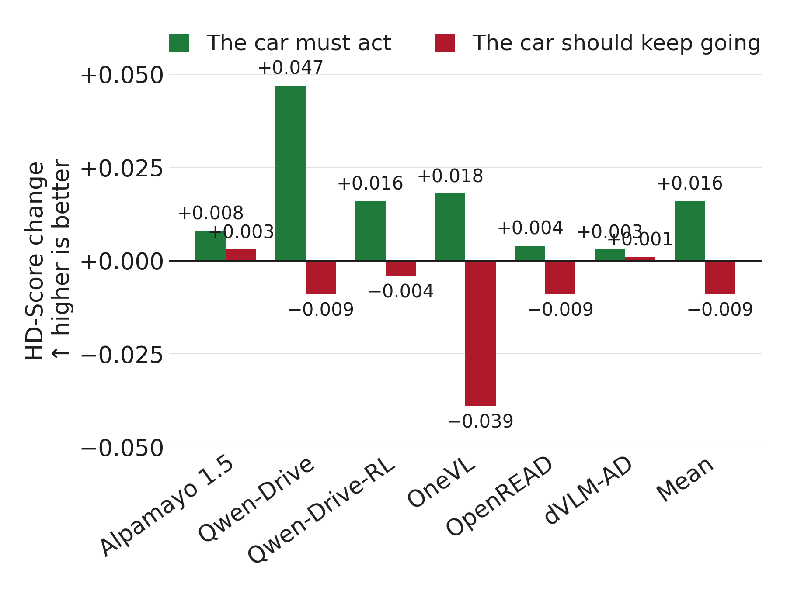
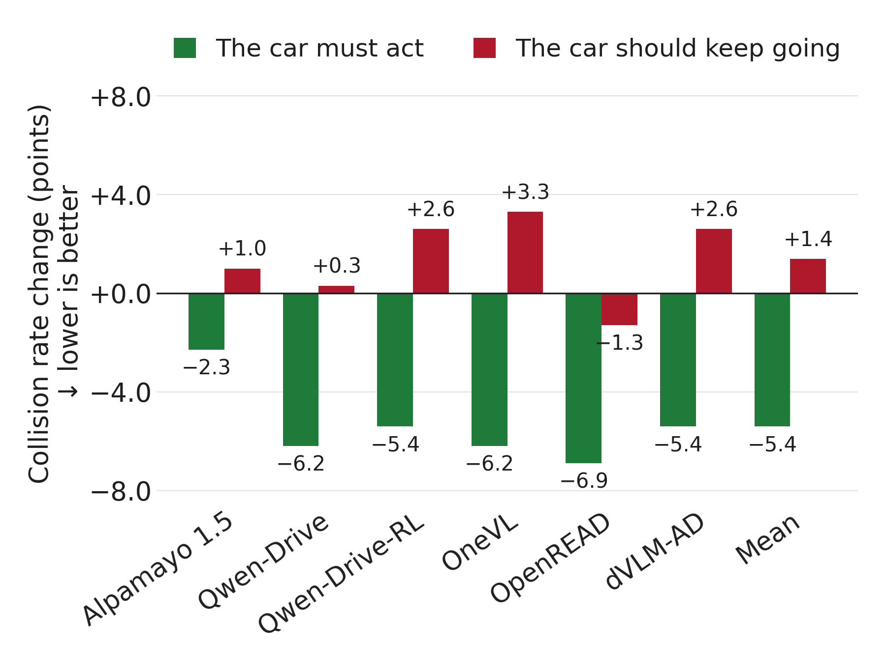
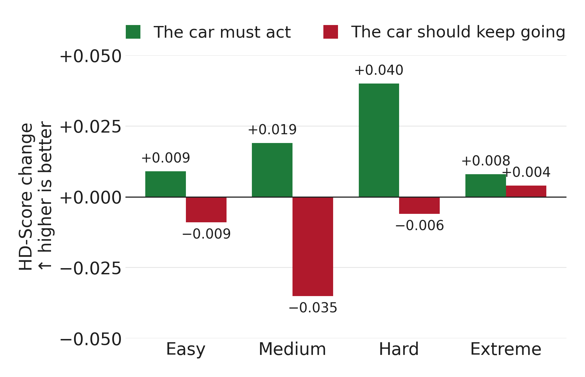
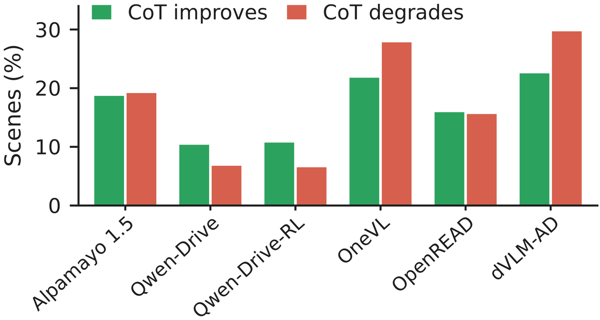
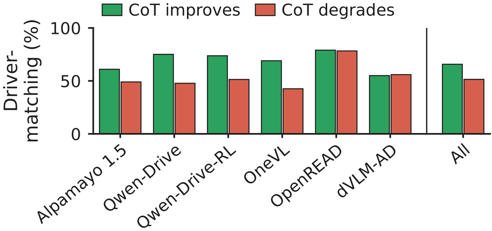
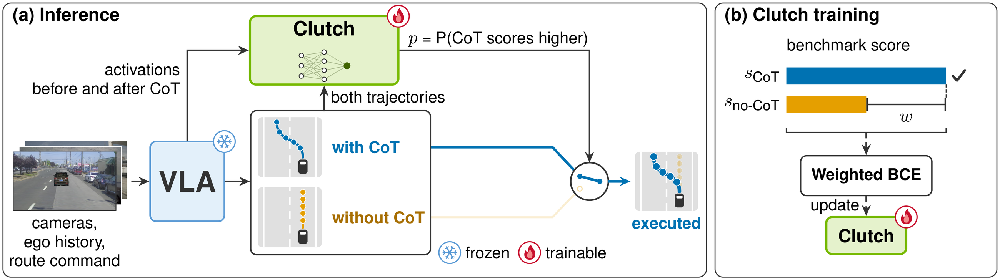
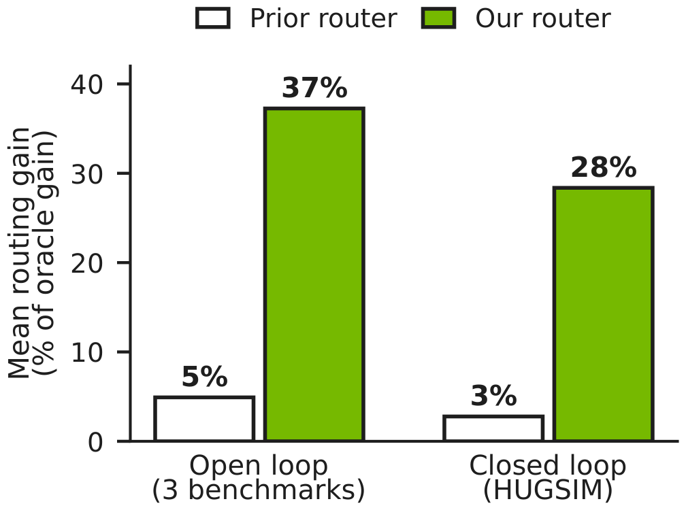
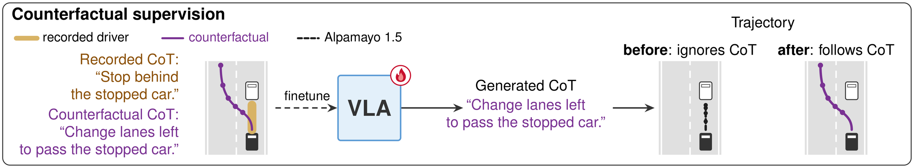
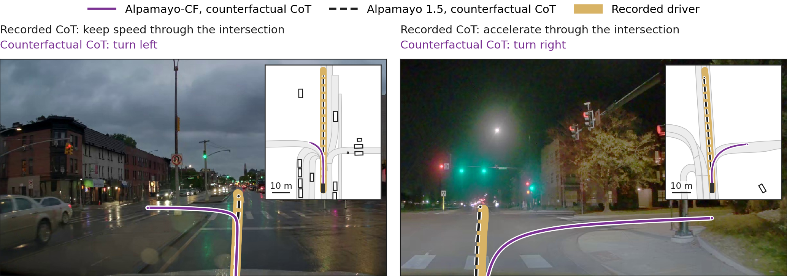
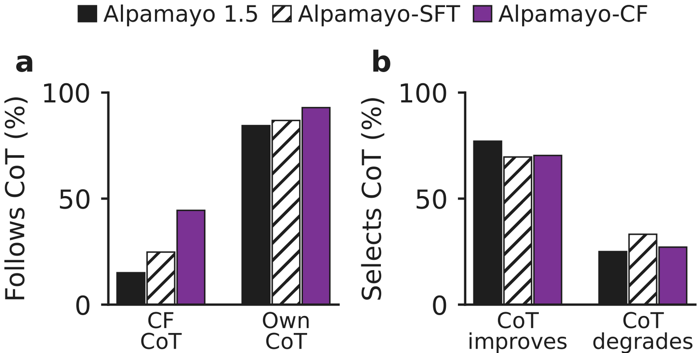

At every planning step, Clutch selects whether to execute the trajectory with CoT or the one without it. We also show the four drives above.
Must act A sedan is stopped in the lane, so to make progress the car must go around it. Never CoT and Always CoT both hit it (HD-Score 0.08 and 0.07). Clutch skips an early nudge, then selects CoT to pass and completes the route (0.75).
Must act A car is stopped in the lane, so to make progress the car must go around it. Without CoT, the car stops behind it, makes no progress, and still collides. With CoT, it changes lanes and passes. Clutch selects CoT to pass and completes the route.
Must act An oncoming car approaches on a narrow street. Without CoT, the car collides. With CoT, it nudges right to make room. Clutch selects CoT to make room and clears the street.
Keep going The truck ahead is still moving, so the car makes progress by following it. CoT states “Nudge left”, an unnecessary action: the trajectory with CoT squeezes into the narrow gap between the truck and the parked cars and collides. Clutch ignores the nudge and keeps following the truck.
Keep going The SUV ahead is still moving, so the car makes progress by following it. With CoT, the car takes an unnecessary nudge left and collides. Clutch selects the trajectory without CoT and follows the SUV.
Must act More drives: a hatchback is stopped in the lane, so to make progress the car must go around it. Without CoT, the car collides. With CoT, it nudges left and passes. Clutch selects CoT to pass and finishes the drive.
Must act More drives: the road curves left. Without CoT, the car drifts right into parked cars. With CoT, it follows the curve. Clutch selects CoT and follows the curve.
Keep going More drives: the car ahead on a narrow street is still moving, so the car makes progress by following it. CoT states “Nudge left” and “Nudge right”, and the trajectory with CoT collides. Clutch selects the trajectory without CoT and stays in its lane.
Closed-loop HUGSIM drives of Alpamayo-CF (Alpamayo 1.5 finetuned with our counterfactual supervision). Left to right: Never CoT, Always CoT, Clutch. Each panel shows the front camera and a bird's-eye view (HD-Score: higher is better). Below Clutch, the bars show its CoT probability p and which trajectory ran at each step (blue: with CoT, orange: without CoT).
Embodied agents must decide when explicit reasoning improves an action, and then carry out the action the reasoning states. Driving vision-language-action models (VLAs) write their reasoning as a chain of thought (CoT) before they output a trajectory, yet always using CoT yields small gains over never using it and can even degrade driving performance.
Across six VLAs, we find that CoT improves driving performance when the car must act, such as passing a stopped car or taking a turn, and degrades it when the car should keep going in its lane. CoT degrades driving performance for two reasons: the CoT can be wrong, or the trajectory can fail to ‘listen’ to a right CoT.
We train a router, Clutch, that decides whether to execute the trajectory generated with CoT or the one generated without it, so that the car does not act on a wrong CoT. The trajectory fails to listen because its decoder learns to rely on the high-dimensional sensor input, which predicts the driver's action in most scenes. Counterfactual supervision removes this shortcut: we train the decoder on CoTs that state a different action, each paired with a trajectory that carries it out.
Clutch outperforms always and never using CoT for every VLA in every evaluation and achieves over 7× the gain of a prior router. With counterfactual supervision, CoT improves driving performance over 4× more when the car must act, and Clutch achieves its largest closed-loop gain. These findings echo a lesson from human cognition: the value of reasoning depends on both its influence on action and the judgment to use it selectively.
CoT improves driving when the car must act, leaves most scenes unchanged, and degrades driving when the car should keep going.
We evaluate six released driving VLAs in closed-loop HUGSIM and on three open-loop benchmarks: NAVSIM, nuScenes, and PhysicalAI-AV. In every scene, we generate one trajectory with CoT and one without it. What the car must do separates where CoT improves driving from where it degrades it.
The car must take a different action, such as taking a turn or passing a stopped car. CoT can state the action the scene requires.
The car should continue in its lane. CoT often states an action that is not needed, such as a pass or a lane change.
How CoT changes the trajectory in each situation. Top (must act): the trajectory without CoT gets stuck behind a barrier or a stopped car, while the trajectory with CoT goes around it. Bottom (keep going): CoT states an unnecessary pass or lane change, and the trajectory with CoT collides.
In closed-loop HUGSIM, CoT improves every VLA when the car must act: all six VLAs raise their HD-Score and collide less. When the car should keep going, CoT lowers HD-Score for four of six VLAs and raises collisions for five of six.
Every VLA drives better with CoT when the car must act

Fewer when the car must act, more when it should keep going

Each bar: always using CoT minus never using CoT, in closed-loop HUGSIM.
Prior work expects CoT to help mainly in complex scenes, yet what the car must do matters at every HUGSIM difficulty level. On open-loop benchmarks, CoT leaves most scenes unchanged and improves about as many scenes as it degrades, so benchmark averages hide both effects.
The finding holds at every level

HD-Score change from never to always using CoT, averaged over all eight VLAs. At every difficulty level, CoT improves HD-Score more when the car must act than when it should keep going.
CoT improves about as many scenes as it degrades

Share of NAVSIM, nuScenes, and PhysicalAI-AV scenes where CoT changes the score (up to half of scenes). Gains and losses nearly cancel in benchmark averages.
Two failure modes, and two fixes that need each other.
Across the three open-loop benchmarks, CoT degrades driving twice as often when the action it states does not match the human driver. Even when the CoT matches the driver, however, the trajectory can ignore it or carry it out poorly, accounting for half of all degraded scenes.
The two fixes need each other: Clutch can only choose between the trajectories the VLA generates, and a trajectory that follows its CoT also follows a wrong one.
Half of degraded scenes still have a right CoT

Share of open-loop scenes where CoT states the human driver's action (All: the six VLAs together). Because half of degraded scenes still have a driver-matching CoT, the CoT text alone cannot tell whether CoT will improve driving.
Prior routers decide before the CoT is written. Clutch decides after both trajectories are generated.
Like a car's clutch, Clutch engages reasoning only when it pays off. Prior routers decide from the scene alone, so they must guess both what the CoT will state and whether the trajectory will carry it out. Clutch reads both candidate trajectories and the frozen VLA's activations, so it guesses neither.

Clutch at inference and in training. (a) The frozen VLA generates one trajectory with CoT and one without, and Clutch uses both trajectories and the VLA's activations as input to select which one to execute. (b) We train Clutch with an outcome-weighted binary cross-entropy loss weighted by the score gap w, so crashes count far more than near ties.
Clutch averages small MLPs with the same architecture for every VLA. Decoding both trajectories in parallel adds only 3% wall-clock time over always using CoT for Alpamayo 1.5.
Seeing both trajectories accounts for most of the gain.
We compare Clutch against BLUE, a prior router that decides before the CoT is written, and remove one part of Clutch at a time. Removing the trajectories cuts Clutch's share of the best possible gain 3×, because the trajectories show what the car would actually do with and without CoT.

Routing gain as a share of the oracle gain. The oracle picks the higher-scoring trajectory in every scene. Clutch achieves over 7× the gain of BLUE.
| Router | Activations | Trajectories | Outcome-weighted loss | Wins ↑ | Oracle share ↑ |
|---|---|---|---|---|---|
| Clutch | before + after CoT | ✓ | ✓ | 24/24 | 37.3% |
| before + after CoT | × | ✓ | 24/24 | 12.2% | |
| before CoT | × | ✓ | 24/24 | 11.3% | |
| BLUE | before CoT | × | × | 17/24 | 4.9% |
Router ablation. Removing one part at a time across 24 open-loop evaluations (8 VLAs × 3 benchmarks). Wins: evaluations where the router outperforms both Never CoT and Always CoT. Oracle share: mean fraction of the oracle gain achieved.
One router design, trained on the frozen VLA, works for all eight VLAs on all four benchmarks.
Read each row across columns: Clutch matches or outperforms Never CoT, Always CoT, and BLUE on all four benchmarks, cutting open-loop trajectory error by up to 24% on nuScenes and PhysicalAI-AV. In the top three rows, pairing Clutch with our counterfactual training (Alpamayo-CF) reaches the highest Alpamayo score on HUGSIM, NAVSIM, and nuScenes.
| VLA | Closed loop | Open loop | ||||||||||||||
|---|---|---|---|---|---|---|---|---|---|---|---|---|---|---|---|---|
| HUGSIM (HD-Score ↑) | NAVSIM (PDMS ↑) | nuScenes (L2, m ↓) | PhysicalAI-AV (ADE, m ↓) | |||||||||||||
| Never | Always | BLUE | Clutch | Never | Always | BLUE | Clutch | Never | Always | BLUE | Clutch | Never | Always | BLUE | Clutch | |
| Alpamayo 1.5 | 0.234 | 0.238 | 0.238 | 0.259 | 60.34 | 61.96 | 61.96 | 68.77 | 1.93 | 1.87 | 1.87 | 1.41 | 1.11 | 1.12 | 1.11 | 0.99 |
| Alpamayo-SFT | 0.361 | 0.363 | 0.361 | 0.368 | 87.34 | 87.17 | 87.48 | 90.06 | 0.70 | 0.70 | 0.69 | 0.65 | 1.24 | 1.29 | 1.24 | 1.12 |
| Alpamayo-CF (ours) | 0.341 | 0.330 | 0.360 | 0.369 | 90.35 | 89.90 | 90.35 | 91.46 | 0.67 | 0.68 | 0.67 | 0.63 | 1.14 | 1.34 | 1.14 | 1.09 |
| Qwen-Drive | 0.313 | 0.319 | 0.323 | 0.324 | 87.83 | 87.99 | 87.99 | 87.99 | 0.94 | 0.93 | 0.92 | 0.92 | 1.37 | 1.36 | 1.36 | 1.35 |
| Qwen-Drive-RL | 0.268 | 0.272 | 0.272 | 0.284 | 90.35 | 90.62 | 90.62 | 90.62 | 0.96 | 0.95 | 0.94 | 0.93 | 1.45 | 1.43 | 1.43 | 1.42 |
| OneVL | 0.307 | 0.296 | 0.304 | 0.319 | 85.42 | 88.23 | 88.23 | 88.64 | 0.86 | 0.97 | 0.86 | 0.84 | 3.31 | 3.57 | 3.29 | 3.08 |
| OpenREAD | 0.300 | 0.296 | 0.301 | 0.305 | 63.75 | 63.34 | 63.75 | 64.61 | 0.76 | 0.75 | 0.75 | 0.75 | 1.29 | 1.29 | 1.28 | 1.28 |
| dVLM-AD | 0.068 | 0.069 | 0.068 | 0.070 | 52.61 | 46.86 | 52.80 | 54.27 | 1.85 | 1.99 | 1.82 | 1.68 | 4.40 | 4.78 | 4.26 | 4.01 |
Closed-loop and open-loop results. Never and Always: CoT always off or always on. BLUE: prior router deciding before CoT. Alpamayo-CF (ours): Alpamayo 1.5 finetuned with counterfactual supervision. Alpamayo-SFT: control finetuned on the same data without counterfactual examples. Bold: best in each row and benchmark. Italics: offline estimates. Clutch. Full method: Alpamayo-CF with Clutch.
Clutch can only choose between the trajectories the VLA generates. Counterfactual supervision trains the decoder to follow its CoT.
When we give Alpamayo 1.5 a CoT that states a different action than the human driver took, its trajectory ignores the CoT over four times out of five. Because the car should keep going in most training scenes, the high-dimensional sensor input predicts the driver's trajectory on its own, and the decoder learns to ignore the CoT. Counterfactual supervision removes this shortcut by pairing a scene with a counterfactual CoT and a safe recorded trajectory from another clip that carries that action out.

Counterfactual supervision. We pair a scene with a counterfactual CoT (a different action than the human driver took) and a safe recorded trajectory that carries it out. Before counterfactual supervision (Alpamayo 1.5), the trajectory can ignore the CoT. After it (Alpamayo-CF), the trajectory follows the CoT.
A counterfactual CoT is not a wrong CoT: it states an action the human driver did not take, and its trajectory is safe in the scene. To build Alpamayo-CF, we keep Alpamayo 1.5's VLM frozen, finetune only the trajectory decoder on original, no-CoT, and counterfactual examples, and then train the decoder with reinforcement learning to reduce error and collisions.
Replacing the CoT changes the trajectory only after counterfactual supervision.

In both scenes, we replace the VLA's CoT with a counterfactual CoT that says to turn. Alpamayo 1.5 (dashed black) ignores it and drives straight with the recorded driver (tan), while Alpamayo-CF (purple) turns as the CoT states. Insets: bird's-eye view.
Alpamayo-CF follows counterfactual CoTs nearly 3× as often, and CoT improves its must-act driving over 4× more.
Finetuning on the same data without counterfactual examples (Alpamayo-SFT) raises CoT following far less. When a CoT that is not driver-matching is replaced with a driver-matching one on NAVSIM, only Alpamayo-CF gains sharply in PDMS, and in closed-loop HUGSIM CoT raises its must-act HD-Score over 4× more than for Alpamayo 1.5 or Alpamayo-SFT.

CoT following (a) and Clutch selection (b). (a) Share of PhysicalAI-AV trajectories that follow a counterfactual CoT (CF CoT) and the VLA's own CoT (Own CoT). (b) Share of open-loop scenes where Clutch selects CoT, among scenes that CoT improves versus degrades.
| VLA | Follows CF CoT (%) ↑ | ΔPDMS ↑ | Must-act gain ↑ |
|---|---|---|---|
| Alpamayo 1.5 | 15.1 | −0.16 | +0.008 |
| Alpamayo-SFT | 24.8 | +0.31 | +0.010 |
| Alpamayo-CF | 44.5 | +1.41 | +0.045 |
Counterfactual supervision results. Follows CF CoT: share of PhysicalAI-AV trajectories following a counterfactual CoT. ΔPDMS: NAVSIM gain when replacing a CoT that is not driver-matching with a driver-matching one. Must-act gain: closed-loop HUGSIM HD-Score change from never to always using CoT when the car must act.
Alpamayo-CF with Clutch outperforms both fixed policies whether the car must act or should keep going.
A trajectory that follows its CoT also follows a wrong one, so always using CoT still degrades Alpamayo-CF when the car should keep going. Without counterfactual supervision, Clutch outperforms always and never using CoT for Alpamayo 1.5 and Alpamayo-SFT only in keep-going scenes. With both parts together, our full method (Alpamayo-CF with Clutch) outperforms both fixed policies in both situations.
| HD-Score ↑ | Must act | Keep going | ||||
|---|---|---|---|---|---|---|
| Never | Always | Clutch | Never | Always | Clutch | |
| Mean over eight VLAs | 0.189 | 0.208 | 0.213 | 0.291 | 0.280 | 0.299 |
| Alpamayo 1.5 | 0.189 | 0.197 | 0.175 | 0.254 | 0.257 | 0.290 |
| Alpamayo-SFT | 0.288 | 0.298 | 0.285 | 0.376 | 0.381 | 0.392 |
| Alpamayo-CF | 0.241 | 0.285 | 0.305 | 0.373 | 0.331 | 0.382 |
Closed-loop HUGSIM HD-Score by situation. Bold: best of Never, Always, and Clutch in each situation.
6 of 6 VLAs
CoT improves every released VLA when the car must act, and degrades driving for most VLAs when the car should keep going.
Over 7×
Clutch turns CoT on only when it pays off, achieving over 7× the routing gain of a prior router.
Nearly 3×
Counterfactual supervision makes the trajectory follow its CoT nearly 3× as often, raising must-act CoT gain over 4×.
@misc{yeung2026reasoning,
title = {Reasoning by Consequence: Selective Chain-of-Thought for Driving VLAs},
author = {Yeung, Jacob and Zhang, Wenyuan and Chang, Nadine and Tarr, Michael J. and
Ramanan, Deva and Alvarez, Jose M. and Wang, Pichao and Chen, Ke},
year = {2026},
}